Home
The Holiday Lets
Location
Booking & Guest Book
Tourist Information
Useful Information <
Links of Interest
Contact Us
 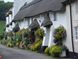
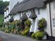
{kind=link}
{kind=link}
 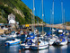
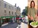
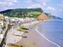
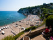
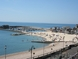
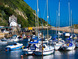
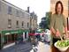
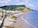
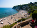
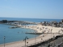
{kind=link}
{kind=link}
{kind=link}
{kind=link}
{kind=link}
{kind=link}
Useful Information
Bakery::
- Husseys, West Street, Axminster & River Cottage in the Square
Bird watching:
- Trinity Hill Nature Reserve (see Nature Reserves)
- Axmouth
Beaches:
- Lyme Regis (sand)
- Sidmouth (sand & pebble)
- Seaton (pebble)
- Branscombe (pebble)
- Weymouth (sand)
- Swanage (sand)
Buses:
- Public Transport Traveline, 0870 608 2608
- National Express, 0870 5808080
Butcher:
- Complete Meats, South Street, Axminster, 01297 33282
- Colyford Butchers, Seaton Road, Colyford and Colyton, 01297 553334/552334
Car boot sales:
- Raymonds Hill (turn left signposted Crewkerne), Sunday 9AM
- Rousdon from A35 before Lyme Regis, turn right to Trinity Hill, Sunday 11AM
Churches:
- Church of England - Dalwood, Trinity Square and Musbury Village
- Roman catholic - Lyme Road
- Baptist - Lyme Regis
- Methodist - Dalwood
Cinemas:
- The Radway, Sidmouth, 01395 513085
- The Regent, Lyme Regis, 01297 442053
- Exeter Odeon, 0870 5050007
- Exeter Picture House, 01392 435522
- Odeon Taunton, 0870 2244007
- Cineworld, Weymouth, 01305 768759
Clothing and footwear:
- for the Countryside - Mole Avon (opp. Ax Railway Stn), 01297 32441
- Trinity House, Trinity Square, Axminster, 01297 32273
Crabbing:
- Seaton Harbour (go to Axmouth follow rd. Harbour, bait shop & cafe on left)
Dentist:
- Axminster Dental Practice, St Georges, Victoria Place, Axminster, 01297 33733
Doctor:
- Axminster Medical Practice, St Thomas Court, Axminster, 01297 32126
- NHS Direct, 0845 4647
Fishing:
- Beer Beach - Deep sea fishing, Cyril Newton 01297 21460
- Also boats available for hire, Kim Aplin 01297 21955
Food shopping:
- Axminster - Tesco, 0845 6779019
- Axminster - Co-op, 01297 35225
- Axminster - River Cottage Store, 01297 631715
- Chard - Somerfield, 01460 64321
- Chard - Tesco
- Sidmouth - Waitrose, 01395 579136
- Honiton - Tesco (has a pharmacy), 0845 6779359
- Honiton - Somerfield, 01404 43174
Garages:
- John Rowe, Axminster, 01297 33110
- Musbury Garage, Musbury, Axminster, 01297 552292
Golf:
- Axecliff Golf Club, Squires Lane, Axmouth, Seaton, 01297 21754
Hairdresser:
- Melanie Brown¡s, George Street, Axminster, 01297 35667
- Bolts, West Street, Axminster, 01297 32211
Horse riding:
- Devenish Pitt Riding School, Farway, Colyton, 01404 871355
Hospital:
- chard Street, Axminster, 01297 630400 (Nearest A+E is at Honiton Hospital)
Ice skating:
- The Pavilion, Plymouth (Swimming, skating and concerts), 01752 229922
Ironmongery:
- mole Avon, Axminster (opp. Railway Stn), 01297 32441
Key cutting:
- Lawsons Ironmonger, 2 Lyme Street, Axminster (key cutting), 01297 35267
Launderette:
- South Street, Axminster (self - service) car park is opposite
Markets:
- Axminster - Thursday, Trinity Square & WI market in South Street Hall
- Honiton - High Street, Tuesday and Saturday, 01305 267992
- Dorchester - large out/indoor market, Wednesday, 01202 841212
- Wimborne - large outside and covered, Sunday
Motor repairs:
- Honiton motor Services, Wilmington (Off A35 Ax to Honiton Road), 01404 831666 Mobile: 07779 134523
National trust:
- national enquiry Number, 0870 458 4000 Mon - Fri
Nature reserves:
- Trinity hill (go up A35 before Hunters Lodge and turning to Lyme Regis turn right into Trinity Hill Road - along this road), Devon County Council 01392 383249
Pet food and sundries:
- Mole Avon, Axminster (opp.railway Stn), 01297 32441
- Pets at Home (on Tesco roundabout)
Photo development:
- Boots, Trinity Square, Axminster, 01297 32288
Post office:
- Musbury Post Office and Stores - turn left out of drive then left at Garage, 01297 552336
- Axminster Post Office, West Street, Axminster, 01297 33244
Restaurants:
- The Golden House Chinese Restaurant, South Street, Axminster, 01297 34375
- Cinnamons Indian Restaurant, South Street, Axminster, 01297 631175
- The Italian Place, Lyme Road, Axminster, 01297 631608
- The Masons Arms, Branscombe, 01297 680300
- The Hare and Hounds, Putts Corner (excellent carvery, large garden for children to play in, 01404 41760
- The Restaurant at Fordwater, Chard Road, Axminster ( book for meals, excellent cream teas, no licence - take your own alcohol), 01460 220257
- The Tuckers Arms, Dalwood, Axminster, 01404 881342
- Rumours Fish Restaurant, 14 Monmouth Street, Lyme Regis, 01297 444740
- River Cottage , Trinity Square, Axminster, 01297 631715
- The Wheelwright Inn, Colyford, 01297 552585
- The Old Inn, Kilmington, 01297 32096
- The Blue Ball, Sidford, 01395 514062
Sports centres:
- Axe Valley Sports Centre, Chard Street, Axminster, 01297 35235
Swimming pools:
- The Flamingo Pool, Lyme Road,Axminster, 01297 35800
- Sidmouth Swimming Pool, Ham Lane, Sidmouth, 01395 577057
Take - aways:
- Golden House Chinese Take Away 1 Lyme Street, Axminster, 01297 34375
- The Lemon Plaice. 2 Lyme Street, Axminster, 01297 35888
- The Charcoal Grill, 2 South Street, Axminster, 01297 631102
- Cinnamons Indian Restaurant, 01297 631175
Taxis:
- Axminster Taxis, Victoria Place, Axminster, 01297 34000
- BJs Lyme Street, Axminster, 01297 35007
Tea - rooms:
- River Cottage, Trinity Square Axminster, 01297 631715
- Fordwater (Ax rd towards Chard), 01460 220257
- Liddon Dairy Tea Rooms, Colyton, 01297 551559
- Connaught Gardens, Sidmouth
Tourist information centres:
- Axminster, 01297 34386
- Chard, 01460 67463
- Honiton, 01404 43716
- Lyme Regis, 01297 442138
Trains:
- Axminster is a main line station, BR Enquiry No: 08457 484950
Vet:
- Coombefield Veterinary Hospital, Coombe Lane, Axminster, 01297 630500
- Husseys, West Street, Axminster & River Cottage in the Square
- Trinity Hill Nature Reserve (see Nature Reserves)
- Axmouth
- Lyme Regis (sand)
- Sidmouth (sand & pebble)
- Seaton (pebble)
- Branscombe (pebble)
- Weymouth (sand)
- Swanage (sand)
- Public Transport Traveline, 0870 608 2608
- National Express, 0870 5808080
- Complete Meats, South Street, Axminster, 01297 33282
- Colyford Butchers, Seaton Road, Colyford and Colyton, 01297 553334/552334
- Raymonds Hill (turn left signposted Crewkerne), Sunday 9AM
- Rousdon from A35 before Lyme Regis, turn right to Trinity Hill, Sunday 11AM
- Church of England - Dalwood, Trinity Square and Musbury Village
- Roman catholic - Lyme Road
- Baptist - Lyme Regis
- Methodist - Dalwood
- The Radway, Sidmouth, 01395 513085
- The Regent, Lyme Regis, 01297 442053
- Exeter Odeon, 0870 5050007
- Exeter Picture House, 01392 435522
- Odeon Taunton, 0870 2244007
- Cineworld, Weymouth, 01305 768759
- for the Countryside - Mole Avon (opp. Ax Railway Stn), 01297 32441
- Trinity House, Trinity Square, Axminster, 01297 32273
- Seaton Harbour (go to Axmouth follow rd. Harbour, bait shop & cafe on left)
- Axminster Dental Practice, St Georges, Victoria Place, Axminster, 01297 33733
- Axminster Medical Practice, St Thomas Court, Axminster, 01297 32126
- NHS Direct, 0845 4647
- Beer Beach - Deep sea fishing, Cyril Newton 01297 21460
- Also boats available for hire, Kim Aplin 01297 21955
- Axminster - Tesco, 0845 6779019
- Axminster - Co-op, 01297 35225
- Axminster - River Cottage Store, 01297 631715
- Chard - Somerfield, 01460 64321
- Chard - Tesco
- Sidmouth - Waitrose, 01395 579136
- Honiton - Tesco (has a pharmacy), 0845 6779359
- Honiton - Somerfield, 01404 43174
- John Rowe, Axminster, 01297 33110
- Musbury Garage, Musbury, Axminster, 01297 552292
- Axecliff Golf Club, Squires Lane, Axmouth, Seaton, 01297 21754
- Melanie Brown¡s, George Street, Axminster, 01297 35667
- Bolts, West Street, Axminster, 01297 32211
- Devenish Pitt Riding School, Farway, Colyton, 01404 871355
- chard Street, Axminster, 01297 630400 (Nearest A+E is at Honiton Hospital)
- The Pavilion, Plymouth (Swimming, skating and concerts), 01752 229922
- mole Avon, Axminster (opp. Railway Stn), 01297 32441
- Lawsons Ironmonger, 2 Lyme Street, Axminster (key cutting), 01297 35267
- South Street, Axminster (self - service) car park is opposite
- Axminster - Thursday, Trinity Square & WI market in South Street Hall
- Honiton - High Street, Tuesday and Saturday, 01305 267992
- Dorchester - large out/indoor market, Wednesday, 01202 841212
- Wimborne - large outside and covered, Sunday
- Honiton motor Services, Wilmington (Off A35 Ax to Honiton Road), 01404 831666 Mobile: 07779 134523
- national enquiry Number, 0870 458 4000 Mon - Fri
- Trinity hill (go up A35 before Hunters Lodge and turning to Lyme Regis turn right into Trinity Hill Road - along this road), Devon County Council 01392 383249
- Mole Avon, Axminster (opp.railway Stn), 01297 32441
- Pets at Home (on Tesco roundabout)
- Boots, Trinity Square, Axminster, 01297 32288
- Musbury Post Office and Stores - turn left out of drive then left at Garage, 01297 552336
- Axminster Post Office, West Street, Axminster, 01297 33244
- The Golden House Chinese Restaurant, South Street, Axminster, 01297 34375
- Cinnamons Indian Restaurant, South Street, Axminster, 01297 631175
- The Italian Place, Lyme Road, Axminster, 01297 631608
- The Masons Arms, Branscombe, 01297 680300
- The Hare and Hounds, Putts Corner (excellent carvery, large garden for children to play in, 01404 41760
- The Restaurant at Fordwater, Chard Road, Axminster ( book for meals, excellent cream teas, no licence - take your own alcohol), 01460 220257
- The Tuckers Arms, Dalwood, Axminster, 01404 881342
- Rumours Fish Restaurant, 14 Monmouth Street, Lyme Regis, 01297 444740
- River Cottage , Trinity Square, Axminster, 01297 631715
- The Wheelwright Inn, Colyford, 01297 552585
- The Old Inn, Kilmington, 01297 32096
- The Blue Ball, Sidford, 01395 514062
- Axe Valley Sports Centre, Chard Street, Axminster, 01297 35235
- The Flamingo Pool, Lyme Road,Axminster, 01297 35800
- Sidmouth Swimming Pool, Ham Lane, Sidmouth, 01395 577057
- Golden House Chinese Take Away 1 Lyme Street, Axminster, 01297 34375
- The Lemon Plaice. 2 Lyme Street, Axminster, 01297 35888
- The Charcoal Grill, 2 South Street, Axminster, 01297 631102
- Cinnamons Indian Restaurant, 01297 631175
- Axminster Taxis, Victoria Place, Axminster, 01297 34000
- BJs Lyme Street, Axminster, 01297 35007
- River Cottage, Trinity Square Axminster, 01297 631715
- Fordwater (Ax rd towards Chard), 01460 220257
- Liddon Dairy Tea Rooms, Colyton, 01297 551559
- Connaught Gardens, Sidmouth
- Axminster, 01297 34386
- Chard, 01460 67463
- Honiton, 01404 43716
- Lyme Regis, 01297 442138
- Axminster is a main line station, BR Enquiry No: 08457 484950
- Coombefield Veterinary Hospital, Coombe Lane, Axminster, 01297 630500
Hawley Farm, Dalwood, Axminster, Devon, EX13 7HR.
Tel: 01404 831250
Mob: 07968 155916